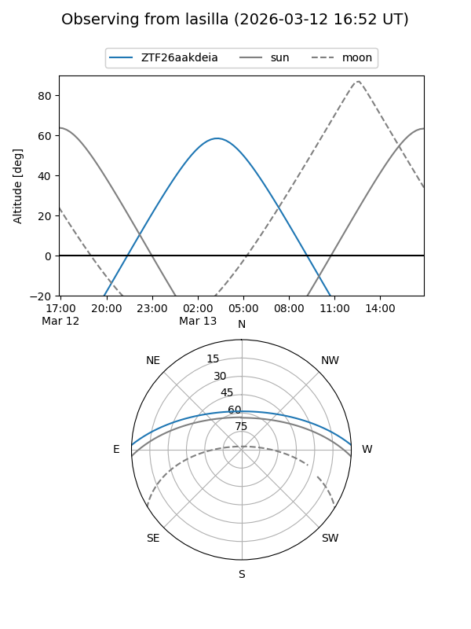
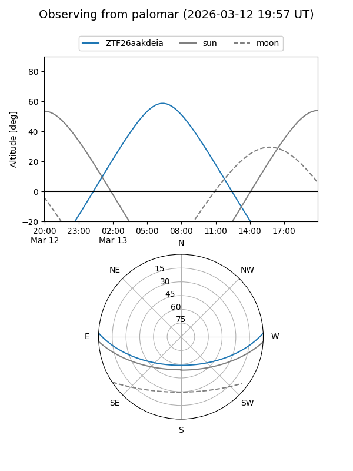

ZTF26aakdeia
Target ZTF26aakdeia at 2026-03-13 07:45
Aliases and brokers:
FINK: link
Lasair: link
ALeRCE: link
alt names
ZTF26aakdeia (ztf,fink_ztf)
Coordinates:
equatorial (ra, dec) = 148.9777,+2.27676
equatorial (HMS+DMS) = 09:55:54.65,+02:16:36.35
galactic (l, b) = (235.8648,+41.23025)
Flags:
Photometry:
last ztfg=18.01
1 ztfg detections
Lightcurve
Visibility


Additional plots